Bài học 22: bảng
Bài học 22: Bàn
/en/excel/groups-and-subtotals/content/
Giới thiệu
Sau khi nhập thông tin vào bảng tính, bạn có thể muốn định dạng dữ liệu của mình dưới dạngbảng. Cũng giống như định dạng thông thường, bảng có thể cải thiệngiao diệnsổ làm việc của bạn và chúng cũng sẽ giúpsắp xếpnội dung của bạn và giúp dữ liệu của bạn dễ sử dụng hơn. Excel bao gồm một sốcông cụvàkiểu bảng được xác định trước, cho phép bạn tạo bảng nhanh chóng và dễ dàng.
Xem video bên dưới để tìm hiểu thêm về cách làm việc với bảng.
Để định dạng dữ liệu dưới dạng bảng:
- Chọnôbạn muốn định dạng dưới dạng bảng. Trong ví dụ của chúng tôi, chúng tôi sẽ chọn phạm vi ôA2:D9.
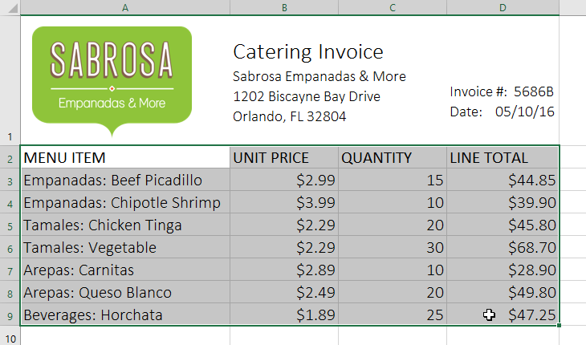
2. Từ tabTrang chủ, nhấp vào lệnhĐịnh dạng dưới dạng Bảngtrong nhómStyles.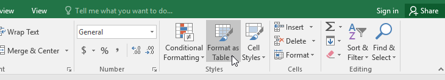
3. Chọnkiểu bảngtừ trình đơn thả xuống.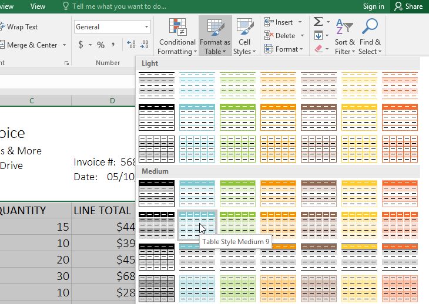
4. Một hộp thoại sẽ xuất hiện, xác nhậnphạm vi ôđã chọn cho bảng. 5. Nếu bảng của bạn cótiêu đề, hãy chọn hộp bên cạnhBảng của tôi có tiêu đề, sau đó nhấp vàoOK.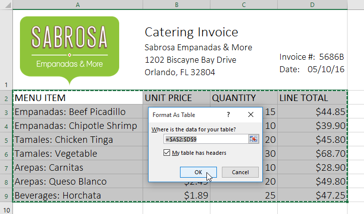
6. Phạm vi ô sẽ được định dạng theokiểu bảngđã chọn.
Các bảng bao gồmlọctheo mặc định. Bạn có thể lọc dữ liệu của mình bất kỳ lúc nào bằng cách sử dụngmũi tên thả xuốngtrong các ô tiêu đề. Để tìm hiểu thêm, hãy xem lại bài học của chúng tôi về Lọc dữ liệu.
Sửa đổi bảng
Thật dễ dàng để sửa đổi giao diện của bất kỳ bảng nào sau khi thêm nó vào trang tính. Excel bao gồm một số tùy chọn để tùy chỉnh bảng, bao gồmthêm hàng hoặc cộtvà thay đổikiểu bảng.
Để thêm hàng hoặc cột vào bảng:
Nếu bạn cần đưa nhiều nội dung hơn vào bảng của mình, bạn có thể sửa đổikích thước bảngbằng cách bao gồm các hàng và cột bổ sung. Có hai cách đơn giản để thay đổi kích thước bảng:
- Nhậpmớinội dungvào bất kỳ hàng hoặc cột liền kề nào. Hàng hoặc cột sẽ được tự động đưa vào bảng.
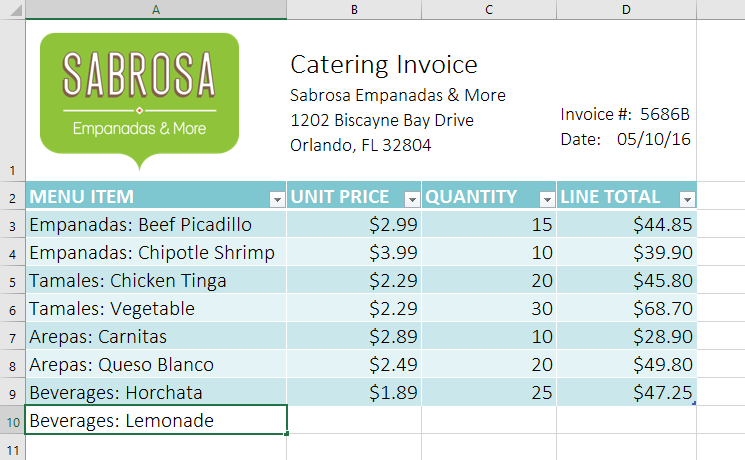
* Nhấp và kéogóc dưới cùng bên phảicủa bảng để tạo thêm hàng hoặc cột.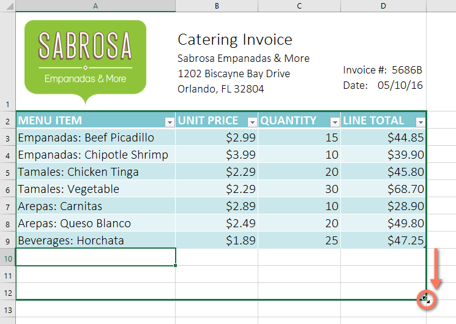
Để thay đổi kiểu bảng:
- Chọnbất kỳ ô nàotrong bảng của bạn, sau đó nhấp vào tabThiết kế.
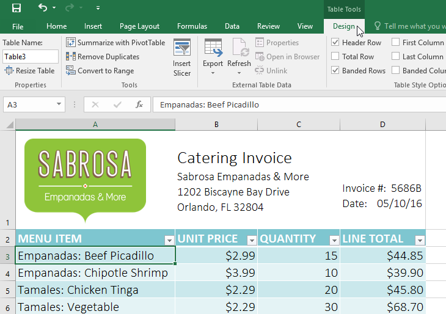
2. Xác định vị trí nhómkiểu bảng, sau đó nhấp vào mũi tên thả xuốngThêmđể xem tất cả các kiểu bảng có sẵn.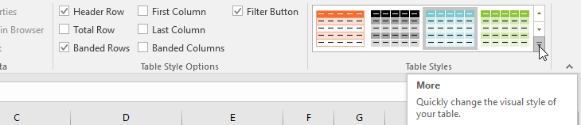
3. Chọnkiểu bảngmong muốn.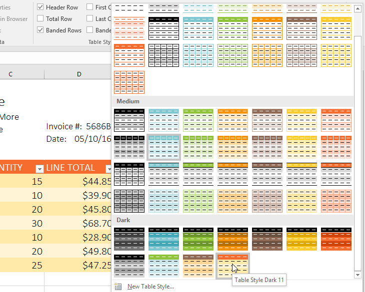
4. kiểu bảngsẽ được áp dụng.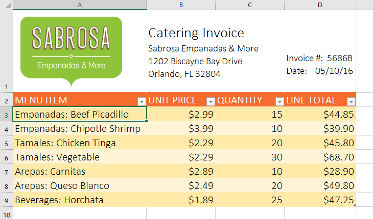
Để sửa đổi các tùy chọn kiểu bảng:
Bạn có thể bật nhiều tùy chọn khác nhaubậthoặctắtđể thay đổi giao diện của bất kỳ bảng nào. Có một số tùy chọn:Hàng tiêu đề,Hàng tổng,Hàng có ribbon,Cột đầu tiên,Cột cuối cùng,Cột có ribbonvàNút bộ lọc.
- Chọnbất kỳ ô nàotrong bảng của bạn, sau đó nhấp vào tabThiết kế.
- Cchết tiệt*hoặcbỏ chọncác tùy chọn mong muốn trong nhómTùy chọn kiểu bảng. Trong ví dụ của chúng tôi, chúng tôi sẽ kiểm traTổng hàngđể tự động bao gồmtổng**cho bảng của chúng tôi.
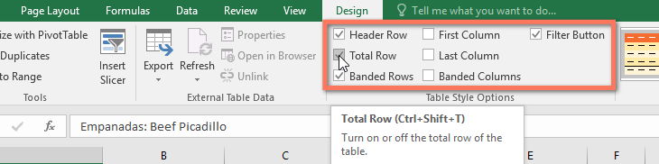
3. Kiểu bảng sẽ được sửa đổi. Trong ví dụ của chúng tôi, mộtmớihàngđã được thêm vào bảng vớicông thứctự động tính tổng giá trị của các ô trong cột D.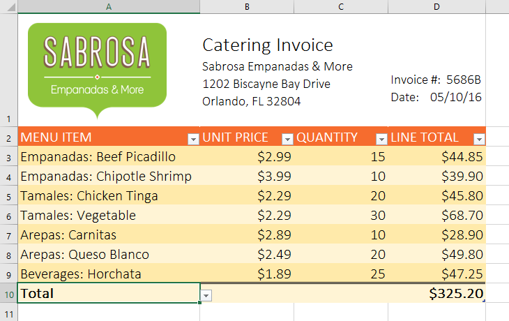
Tùy thuộc vào loạinội dungbạn có—vàkiểu bảngbạn đã chọn—các tùy chọn này có thể ảnh hưởng đến giao diện bảng của bạn theo nhiều cách khác nhau. Bạn có thể cần thử nghiệm một vài lựa chọn để tìm ra phong cách chính xác mà bạn muốn.
Để xóa một bảng:
Bạn có thể xóa bảng khỏi sổ làm việc mà không làm mất bất kỳ dữ liệu nào. Tuy nhiên, điều này có thể gây ra sự cố với một số loạiđịnh dạngnhất định, bao gồm màu sắc, phông chữ và các hàng có dải phân cách. Trước khi sử dụng tùy chọn này, hãy chuẩn bị định dạng lại các ô của bạn nếu cần.
- Chọnbất kỳ ô nàotrong bảng của bạn, sau đó nhấp vào tabThiết kế.
- Nhấp vào lệnhConvert to Rangetrong nhómTools.
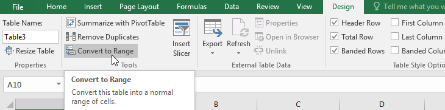
3. Một hộp thoại sẽ xuất hiện. Nhấp vàoCó.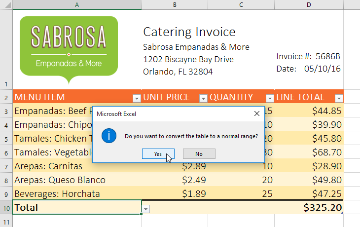
4. Phạm vi sẽ không còn là bảng nữa nhưng các ô sẽ giữ lại dữ liệu và định dạng của chúng.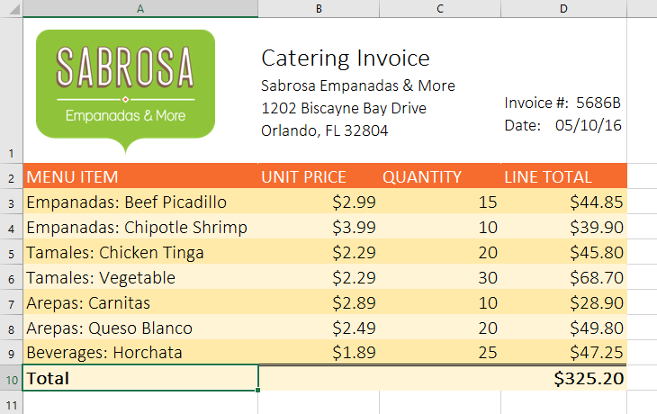
Để khởi động lại định dạng của bạn từ đầu, hãy nhấp vào lệnhXóatrên tabTrang chủ. Tiếp theo, chọnXóa định dạngtừ menu.
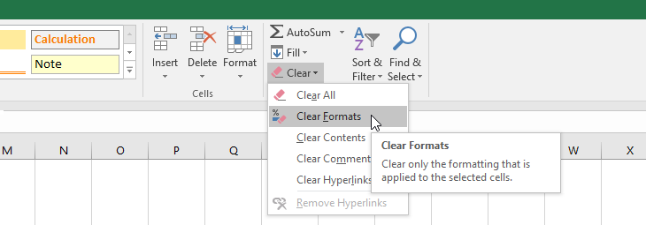
Thử thách!
- Mở sổ làm việc thực hành của chúng tôi.
- Nhấp vào tabThử tháchở phía dưới bên trái của sổ làm việc.
- Chọn các ôA2:D9vàđịnh dạng dưới dạng bảng. Chọn một trong cáckiểu nhẹ nhàng.
- Chèn một hànggiữa hàng 4 và 5. Trong hàng bạn vừa tạo, nhậpEmpanadas: Banana and Nutella, với đơn giá$3,25và số lượng12.
- Thay đổikiểu bảngthànhkiểu bảng Medium 10.
- TrongTùy chọn kiểu bảng, bỏ chọnhàng có ribbonvà chọncột có ribbon.
- Khi bạn hoàn tất, sổ làm việc của bạn sẽ trông như thế này:

/en/excel/biểu đồ/nội dung/